Aplicación 3.9 (Información muestral - Falta de observaciones): Exclusión social en el comportamiento de las aseguradoras de Chicago
En esta aplicación se usarán los datos de un estudio de la década de 1970 sobre la relación entre la exclusión social de los seguros y la composición racial, los índices de incendio y robo, la antigüedad de las viviendas y los ingresos en 47 distritos postales de Chicago.
Código R
# Lectura de librerías
library(tidyverse)
# Lectura de datos
# library(faraway)
# help(chredlin, package="faraway")
chmiss <- read.csv("data/SEGUROS_CHICAGO.csv", header=TRUE, row.names="zip")
# Versión tidyverse: read_csv("SEGUROS_CHICAGO.csv") %>%
# column_to_rownames(., var = "zip")
chmiss race fire theft age involact income
60626 10.0 6.2 29 60.4 NA 11.744
60640 22.2 9.5 44 76.5 0.1 9.323
60613 19.6 10.5 36 NA 1.2 9.948
60657 17.3 7.7 37 NA 0.5 10.656
60614 24.5 8.6 53 81.4 0.7 9.730
60610 54.0 34.1 68 52.6 0.3 8.231
60611 4.9 11.0 75 42.6 0.0 21.480
60625 7.1 6.9 18 78.5 0.0 11.104
60618 5.3 7.3 31 90.1 NA 10.694
60647 21.5 15.1 NA 89.8 1.1 9.631
60622 43.1 29.1 34 82.7 1.9 7.995
60631 1.1 2.2 14 40.2 0.0 13.722
60646 NA 5.7 11 27.9 0.0 16.250
60656 1.7 2.0 11 7.7 0.0 13.686
60630 1.6 2.5 22 63.8 0.0 12.405
60634 1.5 3.0 NA 51.2 0.0 12.198
60641 1.8 5.4 27 85.1 0.0 11.600
60635 1.0 2.2 9 44.4 0.0 12.765
60639 2.5 7.2 29 84.2 0.2 11.084
60651 NA 15.1 30 89.8 0.8 10.510
60644 59.8 16.5 40 NA 0.8 9.784
60624 94.4 18.4 32 72.9 1.8 7.342
60612 86.2 36.2 41 63.1 1.8 6.565
60607 50.2 NA 147 83.0 0.9 7.459
60623 74.2 18.5 22 78.3 1.9 8.014
60608 55.5 NA 29 79.0 1.5 8.177
60616 NA 12.2 46 48.0 0.6 8.212
60632 4.4 5.6 23 71.5 0.3 11.230
60609 46.2 21.8 4 73.1 1.3 NA
60653 99.7 21.6 31 65.0 0.9 5.583
60615 73.5 9.0 39 75.4 0.4 8.564
60638 10.7 3.6 15 20.8 0.0 12.102
60629 1.5 5.0 32 61.8 NA 11.876
60636 48.8 28.6 27 78.1 1.4 9.742
60621 98.9 17.4 NA 68.6 2.2 7.520
60637 90.6 11.3 34 73.4 0.8 7.388
60652 1.4 3.4 17 2.0 0.0 13.842
60620 71.2 11.9 46 NA 0.9 11.040
60619 94.1 10.5 42 55.9 0.9 10.332
60649 66.1 10.7 NA 67.5 0.4 10.908
60617 NA 10.8 34 58.0 0.9 11.156
60655 1.0 4.8 19 15.2 0.0 13.323
60643 42.5 10.4 25 40.8 0.5 12.960
60628 35.1 15.6 28 57.8 1.0 NA
60627 47.4 7.0 3 11.4 0.2 10.080
60633 34.0 7.1 23 49.2 0.3 11.428
60645 3.1 4.9 27 NA 0.0 13.731summary(chmiss) race fire theft age
Min. : 1.00 Min. : 2.00 Min. : 3.00 Min. : 2.00
1st Qu.: 3.75 1st Qu.: 5.60 1st Qu.: 22.00 1st Qu.:48.30
Median :24.50 Median : 9.50 Median : 29.00 Median :64.40
Mean :35.61 Mean :11.42 Mean : 32.65 Mean :59.97
3rd Qu.:57.65 3rd Qu.:15.10 3rd Qu.: 38.00 3rd Qu.:78.25
Max. :99.70 Max. :36.20 Max. :147.00 Max. :90.10
NA's :4 NA's :2 NA's :4 NA's :5
involact income
Min. :0.0000 Min. : 5.583
1st Qu.:0.0000 1st Qu.: 8.564
Median :0.5000 Median :10.694
Mean :0.6477 Mean :10.736
3rd Qu.:0.9250 3rd Qu.:12.102
Max. :2.2000 Max. :21.480
NA's :3 NA's :2 # Detección de datos perdidos
# Por filas (casos)
rowSums(is.na(chmiss))60626 60640 60613 60657 60614 60610 60611 60625 60618 60647 60622 60631 60646
1 0 1 1 0 0 0 0 1 1 0 0 1
60656 60630 60634 60641 60635 60639 60651 60644 60624 60612 60607 60623 60608
0 0 1 0 0 0 1 1 0 0 1 0 1
60616 60632 60609 60653 60615 60638 60629 60636 60621 60637 60652 60620 60619
1 0 1 0 0 0 1 0 1 0 0 1 0
60649 60617 60655 60643 60628 60627 60633 60645
1 1 0 0 1 0 0 1 image(is.na(chmiss),axes=FALSE)
axis(2, at=0:5/5, labels=colnames(chmiss),las=2)
axis(1, at=0:46/46, labels=row.names(chmiss),las=2)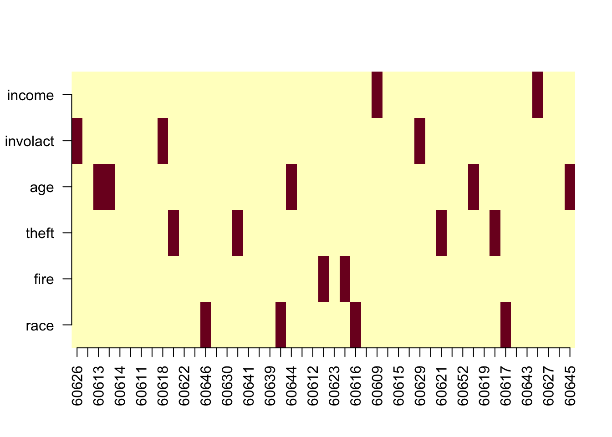
# Por columnas (variables)
colSums(is.na(chmiss)) race fire theft age involact income
4 2 4 5 3 2 library(mi)
md <- missing_data.frame(chmiss)
image(md)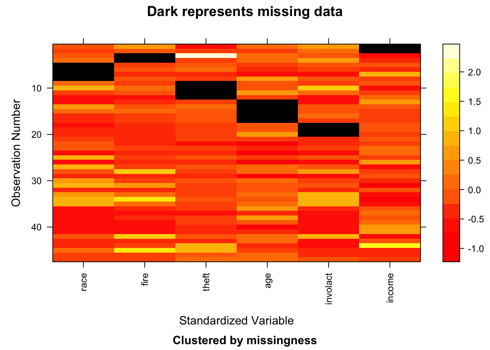
summary(md@patterns) nothing involact age theft race fire income
27 3 5 4 4 2 2 # Tratamiento de datos perdidos
# Omisión de observaciones (opción por defecto en R):
# Resultados con datos completos
mod_1 <- lm(involact ~ race+fire+theft+age+log(income), chmiss)
summary(mod_1)
Call:
lm(formula = involact ~ race + fire + theft + age + log(income),
data = chmiss)
Residuals:
Min 1Q Median 3Q Max
-0.59598 -0.19593 -0.05729 0.13641 0.63481
Coefficients:
Estimate Std. Error t value Pr(>|t|)
(Intercept) -2.407202 1.419160 -1.696 0.104621
race 0.011129 0.003443 3.232 0.003994 **
fire 0.045003 0.010696 4.208 0.000395 ***
theft -0.016062 0.005550 -2.894 0.008678 **
age 0.009129 0.003443 2.652 0.014926 *
log(income) 0.844261 0.531601 1.588 0.127196
---
Signif. codes: 0 '***' 0.001 '**' 0.01 '*' 0.05 '.' 0.1 ' ' 1
Residual standard error: 0.3392 on 21 degrees of freedom
(20 observations deleted due to missingness)
Multiple R-squared: 0.7899, Adjusted R-squared: 0.7399
F-statistic: 15.79 on 5 and 21 DF, p-value: 1.688e-06# Imputación simple
# Uso de la media para predecir los datos faltantes de los regresores
(cmeans <- colMeans(chmiss,na.rm=TRUE)) race fire theft age involact income
35.6093023 11.4244444 32.6511628 59.9690476 0.6477273 10.7358667 imput_1 <- chmiss
for(i in c(1:4,6)) imput_1[is.na(chmiss[,i]),i] <- cmeans[i] # Sólo var. expl.
mod_2 <- lm(involact ~ race+fire+theft+age+log(income), imput_1)
summary(mod_2)
Call:
lm(formula = involact ~ race + fire + theft + age + log(income),
data = imput_1)
Residuals:
Min 1Q Median 3Q Max
-1.00582 -0.15772 -0.00159 0.22214 0.80666
Coefficients:
Estimate Std. Error t value Pr(>|t|)
(Intercept) 0.529635 1.087923 0.487 0.62917
race 0.006975 0.002845 2.452 0.01893 *
fire 0.028208 0.009541 2.956 0.00532 **
theft -0.003310 0.002745 -1.206 0.23541
age 0.006244 0.003160 1.976 0.05543 .
log(income) -0.315826 0.390255 -0.809 0.42339
---
Signif. codes: 0 '***' 0.001 '**' 0.01 '*' 0.05 '.' 0.1 ' ' 1
Residual standard error: 0.3845 on 38 degrees of freedom
(3 observations deleted due to missingness)
Multiple R-squared: 0.6813, Adjusted R-squared: 0.6394
F-statistic: 16.25 on 5 and 38 DF, p-value: 1.461e-08# Uso de regresiones para predecir los datos faltantes
# de las variables explicativas
mod_race <- lm(race ~ fire+theft+age+income,chmiss)
chmiss[is.na(chmiss$race),] race fire theft age involact income
60646 NA 5.7 11 27.9 0.0 16.250
60651 NA 15.1 30 89.8 0.8 10.510
60616 NA 12.2 46 48.0 0.6 8.212
60617 NA 10.8 34 58.0 0.9 11.156predict(mod_race,chmiss[is.na(chmiss$race),]) 60646 60651 60616 60617
-17.84722 26.35970 70.39441 32.62029 # Como la predicción para la zona 60646 es negativa,
# se puede usar la transformación logit ( log(y/(1-y)) )
# para evitar que las predicciones se salgan del intervalo [0,1]
# y luego aplicar la transformación inversa a la predicción
library(faraway)
mod_race_2 <- lm(logit(race/100) ~ fire+theft+age+income,chmiss)
ilogit(predict(mod_race_2,chmiss[is.na(chmiss$race),]))*100 60646 60651 60616 60617
0.4190909 14.7320193 84.2653995 21.3121261 mod_fire <- lm(fire ~ race+theft+age+income,chmiss)
chmiss[is.na(chmiss$fire),] race fire theft age involact income
60607 50.2 NA 147 83 0.9 7.459
60608 55.5 NA 29 79 1.5 8.177predict(mod_fire,chmiss[is.na(chmiss$fire),]) 60607 60608
50.23688 15.40465 mod_theft <- lm(theft ~ race+fire+age+income,chmiss)
chmiss[is.na(chmiss$theft),] race fire theft age involact income
60647 21.5 15.1 NA 89.8 1.1 9.631
60634 1.5 3.0 NA 51.2 0.0 12.198
60621 98.9 17.4 NA 68.6 2.2 7.520
60649 66.1 10.7 NA 67.5 0.4 10.908predict(mod_theft,chmiss[is.na(chmiss$theft),]) 60647 60634 60621 60649
35.82849 20.86813 35.39362 38.04624 mod_age <- lm(age ~ race+fire+theft+income,chmiss)
chmiss[is.na(chmiss$age),] race fire theft age involact income
60613 19.6 10.5 36 NA 1.2 9.948
60657 17.3 7.7 37 NA 0.5 10.656
60644 59.8 16.5 40 NA 0.8 9.784
60620 71.2 11.9 46 NA 0.9 11.040
60645 3.1 4.9 27 NA 0.0 13.731predict(mod_age,chmiss[is.na(chmiss$age),]) 60613 60657 60644 60620 60645
74.11181 71.75477 64.29939 59.13367 45.83281 mod_income <- lm(income ~ race+fire+theft+age,chmiss)
chmiss[is.na(chmiss$income),] race fire theft age involact income
60609 46.2 21.8 4 73.1 1.3 NA
60628 35.1 15.6 28 57.8 1.0 NApredict(mod_income,chmiss[is.na(chmiss$income),]) 60609 60628
6.338472 10.190580 # Generación de valores para los datos perdidos por variable
imput_2 <- chmiss
imput_2$race[is.na(chmiss$race)] <-
ilogit(predict(mod_race_2,chmiss[is.na(chmiss$race),]))*100
imput_2$fire[is.na(chmiss$fire)] <-
predict(mod_fire,chmiss[is.na(chmiss$fire),])
imput_2$theft[is.na(chmiss$theft)] <-
predict(mod_theft,chmiss[is.na(chmiss$theft),])
imput_2$age[is.na(chmiss$age)] <-
predict(mod_age,chmiss[is.na(chmiss$age),])
imput_2$income[is.na(chmiss$income)] <-
predict(mod_income,chmiss[is.na(chmiss$income),])
#
mod_3 <- lm(involact ~ race+fire+theft+age+log(income), imput_2)
summary(mod_3)
Call:
lm(formula = involact ~ race + fire + theft + age + log(income),
data = imput_2)
Residuals:
Min 1Q Median 3Q Max
-0.7475 -0.1841 -0.0582 0.2203 0.8484
Coefficients:
Estimate Std. Error t value Pr(>|t|)
(Intercept) -1.329475 1.212672 -1.096 0.279839
race 0.009550 0.002627 3.635 0.000820 ***
fire 0.039664 0.009974 3.977 0.000303 ***
theft -0.012791 0.003615 -3.539 0.001080 **
age 0.009848 0.003071 3.207 0.002723 **
log(income) 0.408210 0.443478 0.920 0.363132
---
Signif. codes: 0 '***' 0.001 '**' 0.01 '*' 0.05 '.' 0.1 ' ' 1
Residual standard error: 0.3581 on 38 degrees of freedom
(3 observations deleted due to missingness)
Multiple R-squared: 0.7235, Adjusted R-squared: 0.6872
F-statistic: 19.89 on 5 and 38 DF, p-value: 1.067e-09# Imputación múltiple
# Enfoque AMELIA (https://cran.r-project.org/web/packages/Amelia/index.html)
library(Amelia)
imput_3 <- amelia(chmiss, m=10)-- Imputation 1 --
1 2 3 4 5 6 7 8 9 10 11 12 13 14 15 16 17 18 19 20
21 22 23 24 25 26 27 28 29 30 31 32 33 34
-- Imputation 2 --
1 2 3 4 5 6 7 8 9 10 11 12 13 14 15 16 17 18 19 20
21 22 23 24 25 26 27 28 29 30 31
-- Imputation 3 --
1 2 3 4 5 6 7 8 9 10 11 12 13 14 15 16 17 18 19 20
21 22 23 24 25 26 27 28 29 30 31 32 33 34 35 36 37 38 39 40
41 42 43 44 45 46 47 48 49 50 51 52 53 54 55 56 57 58 59 60
61 62 63 64 65 66 67 68 69 70 71 72 73 74 75 76 77 78 79 80
81 82 83 84 85 86 87 88 89 90 91 92 93 94 95 96 97 98 99 100
101 102 103 104 105 106 107 108 109 110 111 112 113 114 115 116 117 118 119 120
121 122 123 124 125 126 127 128 129 130 131 132 133 134 135 136 137 138 139 140
141 142 143 144 145 146 147 148 149 150 151 152 153 154 155 156 157 158 159 160
161 162 163 164 165 166 167 168 169 170 171 172 173 174 175 176 177 178 179 180
181 182 183 184 185 186 187 188 189 190 191 192 193 194 195 196 197 198 199 200
201 202 203 204 205 206 207 208 209 210 211 212 213 214 215 216 217 218 219 220
221 222 223 224 225 226 227 228 229 230 231 232 233 234 235 236 237 238 239 240
241 242 243 244 245 246 247 248 249 250 251 252 253 254 255 256 257 258 259 260
261 262 263 264 265 266
-- Imputation 4 --
1 2 3 4 5 6 7 8 9 10 11 12 13
-- Imputation 5 --
1 2 3 4 5 6 7 8 9 10 11 12 13 14 15 16 17 18 19 20
21 22 23 24 25 26 27 28 29 30 31
-- Imputation 6 --
1 2 3 4 5 6 7 8 9 10 11 12 13 14 15 16 17 18 19 20
21 22 23
-- Imputation 7 --
1 2 3 4 5 6 7 8 9 10 11 12 13 14 15 16 17 18 19 20
21 22 23 24 25 26 27 28 29 30 31 32 33 34 35 36 37 38 39 40
41 42 43 44
-- Imputation 8 --
1 2 3 4 5 6 7 8
-- Imputation 9 --
1 2 3 4 5 6 7 8 9 10 11 12 13 14 15 16 17 18 19 20
21 22 23 24 25 26 27 28 29 30 31 32 33 34 35 36 37 38
-- Imputation 10 --
1 2 3 4 5 6 7 8 9 10 11 12 13 14 15 16 17 18 19 20
21 22 23 24 25 26 27 28 29 30summary(imput_3)
Amelia output with 10 imputed datasets.
Return code: 1
Message: Normal EM convergence.
Chain Lengths:
--------------
Imputation 1: 34
Imputation 2: 31
Imputation 3: 266
Imputation 4: 13
Imputation 5: 31
Imputation 6: 23
Imputation 7: 44
Imputation 8: 8
Imputation 9: 38
Imputation 10: 30
Rows after Listwise Deletion: 27
Rows after Imputation: 47
Patterns of missingness in the data: 7
Fraction Missing for original variables:
-----------------------------------------
Fraction Missing
race 0.08510638
fire 0.04255319
theft 0.08510638
age 0.10638298
involact 0.06382979
income 0.04255319betas <- NULL
se_betas <- NULL
for(i in 1:imput_3$m){
lmod <- lm(involact ~ race+fire+theft+age+log(income), imput_3$imputations[[i]])
betas <- rbind(betas ,coef(lmod))
se_betas <- rbind(se_betas ,coef(summary(lmod))[,2])
}
# Estimaciones, desviaciones estándar estimadas y estadísticos t
# (individuales y combinadas)
betas; se_betas (Intercept) race fire theft age log(income)
[1,] -1.5525609 0.009937092 0.03870088 -0.0152888859 0.009631753 0.53071044
[2,] -1.9319807 0.009453789 0.04440711 -0.0160375613 0.009757833 0.68863489
[3,] 0.2448739 0.007705441 0.03085692 -0.0009555429 0.003740203 -0.19107621
[4,] -1.3467722 0.009217949 0.04388865 -0.0142605811 0.008672619 0.44003774
[5,] -0.3409742 0.008060194 0.03501345 -0.0064161551 0.007061484 0.01934436
[6,] -1.1078476 0.008859360 0.04097190 -0.0113665740 0.007393054 0.36141559
[7,] -0.7420008 0.008563633 0.03355230 -0.0108660509 0.009499151 0.19525780
[8,] -0.5892517 0.007141891 0.03708851 -0.0087319441 0.008875525 0.12364921
[9,] -1.1094510 0.008858619 0.03494759 -0.0091012285 0.008898799 0.32620447
[10,] -2.2949774 0.011578763 0.04380959 -0.0183111733 0.011214960 0.80341878 (Intercept) race fire theft age log(income)
[1,] 1.2433354 0.002496593 0.008429839 0.003644478 0.002822203 0.4603116
[2,] 1.1233633 0.002063869 0.008161911 0.003113964 0.002497281 0.4180875
[3,] 1.1425459 0.002893534 0.009577713 0.002689867 0.003029610 0.4140592
[4,] 1.1266954 0.002299525 0.009287729 0.003372176 0.002712483 0.4170345
[5,] 0.9521167 0.002407655 0.008675438 0.002243288 0.002676973 0.3432152
[6,] 1.2043357 0.002573586 0.009052202 0.002993047 0.002627159 0.4432011
[7,] 1.1022682 0.002430982 0.009130116 0.003280169 0.002702264 0.4048608
[8,] 1.0496255 0.002455072 0.009714593 0.002891184 0.002693610 0.3847180
[9,] 1.1039016 0.002453714 0.007685852 0.002389084 0.002596267 0.4039217
[10,] 1.0582906 0.002222866 0.008224091 0.003496879 0.002532884 0.3936320(cr <- mi.meld(q=betas,se=se_betas))$q.mi
(Intercept) race fire theft age log(income)
[1,] -1.077094 0.008937673 0.03832369 -0.01113357 0.008474538 0.3297597
$se.mi
(Intercept) race fire theft age log(income)
[1,] 1.367296 0.002767024 0.01015424 0.006197655 0.00344035 0.5193(cr$q.mi/cr$se.mi) (Intercept) race fire theft age log(income)
[1,] -0.7877547 3.230067 3.774156 -1.796416 2.463278 0.6350081# Enfoque MICE (https://cran.r-project.org/web/packages/mice/)
library(mice)
# Patrón de datos perdidos
md.pattern(chmiss)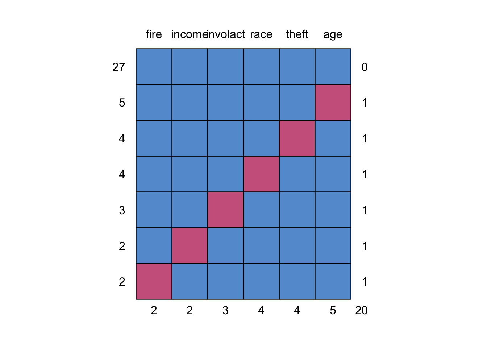
fire income involact race theft age
27 1 1 1 1 1 1 0
5 1 1 1 1 1 0 1
4 1 1 1 1 0 1 1
4 1 1 1 0 1 1 1
3 1 1 0 1 1 1 1
2 1 0 1 1 1 1 1
2 0 1 1 1 1 1 1
2 2 3 4 4 5 20# Imputación simple con la media de los datos completos
imp_4_0 <- mice(chmiss, method = "mean", m = 1, maxit = 1)
iter imp variable
1 1 race fire theft age involact incomeimput_1_2 <- complete(imp_4_0) # Se obtiene el mismo resultado que
# en el fichero imput_1, pera también se imputan
summary(with(imput_1_2, lm(involact ~ race+fire+theft+age+log(income))))
Call:
lm(formula = involact ~ race + fire + theft + age + log(income))
Residuals:
Min 1Q Median 3Q Max
-0.99102 -0.18765 0.01174 0.21644 0.82392
Coefficients:
Estimate Std. Error t value Pr(>|t|)
(Intercept) 0.628604 1.075959 0.584 0.56227
race 0.006248 0.002765 2.259 0.02923 *
fire 0.027110 0.009419 2.878 0.00632 **
theft -0.003339 0.002716 -1.229 0.22599
age 0.006754 0.003044 2.219 0.03209 *
log(income) -0.345200 0.386098 -0.894 0.37650
---
Signif. codes: 0 '***' 0.001 '**' 0.01 '*' 0.05 '.' 0.1 ' ' 1
Residual standard error: 0.381 on 41 degrees of freedom
Multiple R-squared: 0.6624, Adjusted R-squared: 0.6212
F-statistic: 16.09 on 5 and 41 DF, p-value: 9.149e-09# Imputación por el método de regresión (1):
# Predicción simple
imp_4_1 <- mice(chmiss, method = "norm.predict", m = 1, maxit = 1)
iter imp variable
1 1 race fire theft age involact incomeimput_2_1 <- complete(imp_4_1) # Comparar con el fichero imput_2
# Imputación por el método de regresión (2):
# Predicción estocástica (se añade un error aleatorio)
imp_4_2 <- mice(chmiss, method = "norm.nob", m = 1, maxit = 1)
iter imp variable
1 1 race fire theft age involact incomeimput_2_2 <- complete(imp_4_2) # Comparar con el fichero imput_2
# Imputación por el método de regresión (3):
# Predicción usando booostrap
imp_4_3 <- mice(chmiss, method = "norm.boot", m = 1, maxit = 1)
iter imp variable
1 1 race fire theft age involact incomeimput_2_3 <- complete(imp_4_3) # Comparar con el fichero imput_2
# MICE: Multiple Imputation Chained Equation
imp_4 <- mice(chmiss, m = 10, print=F)
summary(imp_4)Class: mids
Number of multiple imputations: 10
Imputation methods:
race fire theft age involact income
"pmm" "pmm" "pmm" "pmm" "pmm" "pmm"
PredictorMatrix:
race fire theft age involact income
race 0 1 1 1 1 1
fire 1 0 1 1 1 1
theft 1 1 0 1 1 1
age 1 1 1 0 1 1
involact 1 1 1 1 0 1
income 1 1 1 1 1 0class(imp_4) # mids: multiply imputed data set[1] "mids"attributes(imp_4)$names
[1] "data" "imp" "m" "where"
[5] "blocks" "call" "nmis" "method"
[9] "predictorMatrix" "visitSequence" "formulas" "post"
[13] "blots" "ignore" "seed" "iteration"
[17] "lastSeedValue" "chainMean" "chainVar" "loggedEvents"
[21] "version" "date"
$class
[1] "mids"# Para ver los datos imputados de una variable
imp_4$imp # Todas las imputaciones$race
1 2 3 4 5 6 7 8 9 10
60646 1.5 1.1 4.4 1.8 1.6 7.1 7.1 1.0 1.8 1.0
60651 17.3 66.1 59.8 17.3 34.0 22.2 42.5 47.4 73.5 71.2
60616 54.0 90.6 35.1 90.6 74.2 21.5 55.5 71.2 54.0 54.0
60617 48.8 71.2 19.6 71.2 21.5 59.8 24.5 71.2 66.1 73.5
$fire
1 2 3 4 5 6 7 8 9 10
60607 36.2 17.4 18.5 18.4 29.1 17.4 29.1 18.5 29.1 29.1
60608 10.5 18.4 18.4 18.5 10.5 21.6 8.6 10.5 34.1 21.6
$theft
1 2 3 4 5 6 7 8 9 10
60647 18 37 32 23 46 34 42 27 44 46
60634 14 14 27 9 22 22 14 23 32 42
60621 29 14 11 27 11 11 36 14 19 3
60649 41 31 75 41 31 37 18 27 41 27
$age
1 2 3 4 5 6 7 8 9 10
60613 68.6 82.7 72.9 82.7 83.0 63.1 81.4 63.1 79.0 63.1
60657 63.1 90.1 78.1 89.8 90.1 78.1 71.5 65.0 65.0 57.8
60644 65.0 61.8 63.8 85.1 76.5 71.5 71.5 73.4 65.0 90.1
60620 63.8 78.1 55.9 61.8 90.1 84.2 90.1 73.1 60.4 72.9
60645 78.5 40.2 11.4 40.2 44.4 49.2 44.4 7.7 20.8 15.2
$involact
1 2 3 4 5 6 7 8 9 10
60626 0.0 0.3 0.3 0.0 0.0 0 0.0 0.3 0.3 0.0
60618 0.3 0.9 0.3 0.2 0.5 0 0.2 0.7 1.2 0.2
60629 0.0 0.3 0.0 0.0 0.0 0 0.0 0.0 0.0 0.0
$income
1 2 3 4 5 6 7 8 9 10
60609 7.388 9.631 10.332 10.908 10.510 9.631 11.040 8.212 9.742 7.388
60628 11.156 9.948 7.459 10.694 11.084 11.156 8.212 9.323 9.948 9.323# Imputaciones para una variable:
# cambiar race por otra variable para ver el resultado
imp_4$imp$race 1 2 3 4 5 6 7 8 9 10
60646 1.5 1.1 4.4 1.8 1.6 7.1 7.1 1.0 1.8 1.0
60651 17.3 66.1 59.8 17.3 34.0 22.2 42.5 47.4 73.5 71.2
60616 54.0 90.6 35.1 90.6 74.2 21.5 55.5 71.2 54.0 54.0
60617 48.8 71.2 19.6 71.2 21.5 59.8 24.5 71.2 66.1 73.5# Para guardar los datos completos de una imputación
imp_4_m_1 <- complete(imp_4,1) # cambiar 1 por cualquier valor entre 1 y 10
#
# Inspección de la calidad de las imputaciones
# Convergencia del algoritmo (iterative Markov Chain Monte Carlo)
plot(imp_4)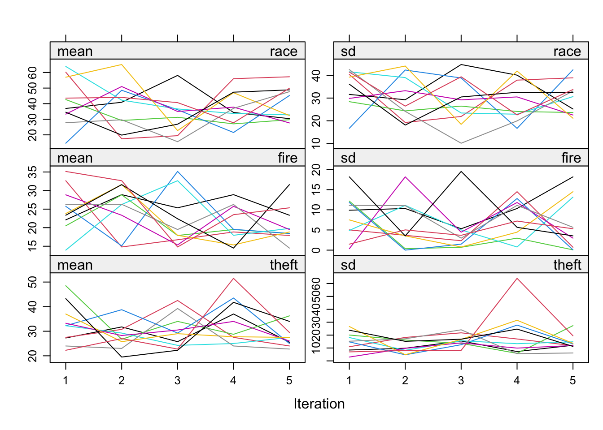
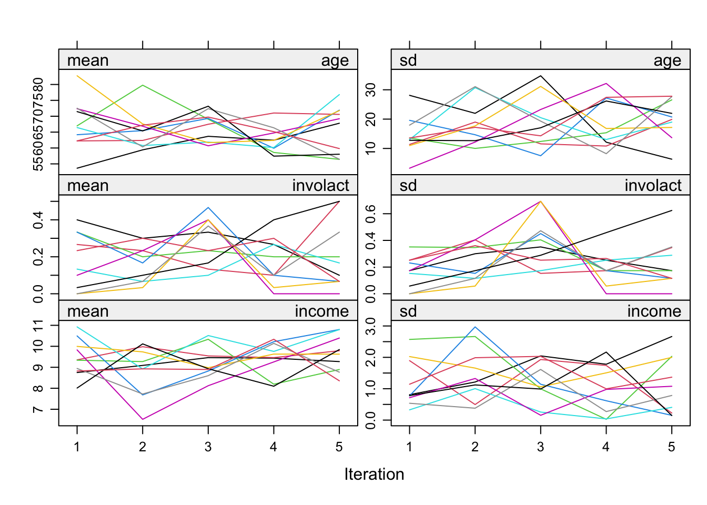
# Gráfica conjunta
stripplot(imp_4)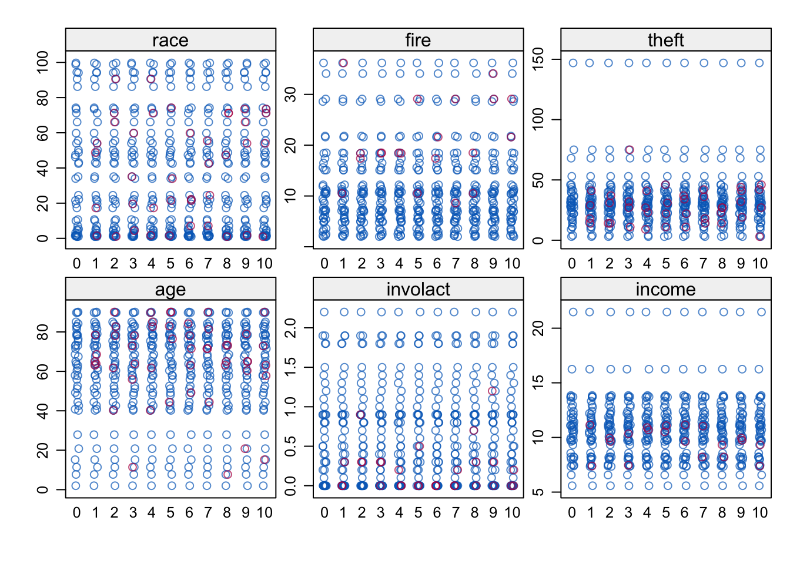
# Gráfica individual
stripplot(imp_4, involact, pch = 20, xlab = "Imputation number")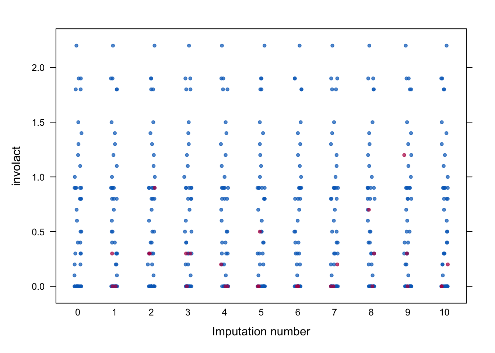
stripplot(imp_4, race, pch = 20, xlab = "Imputation number")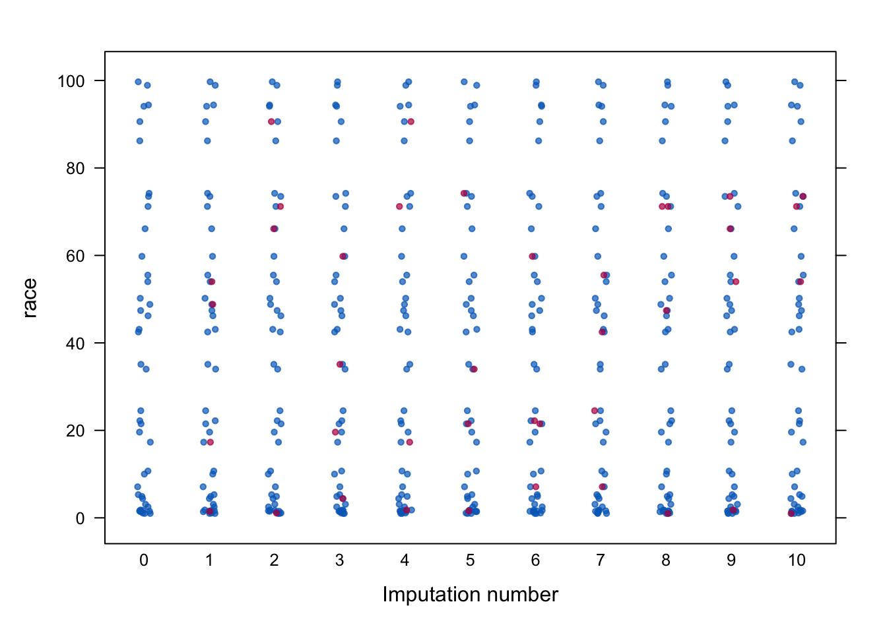
stripplot(imp_4, fire, pch = 20, xlab = "Imputation number")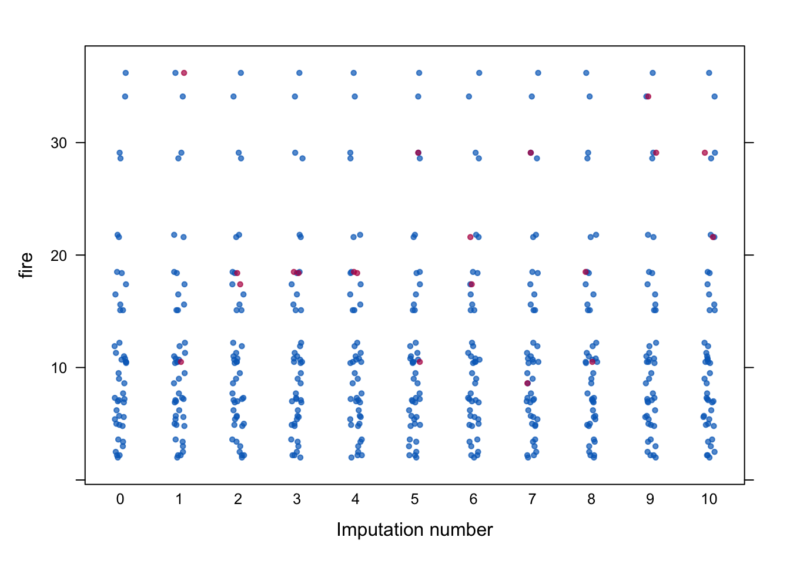
stripplot(imp_4, theft, pch = 20, xlab = "Imputation number")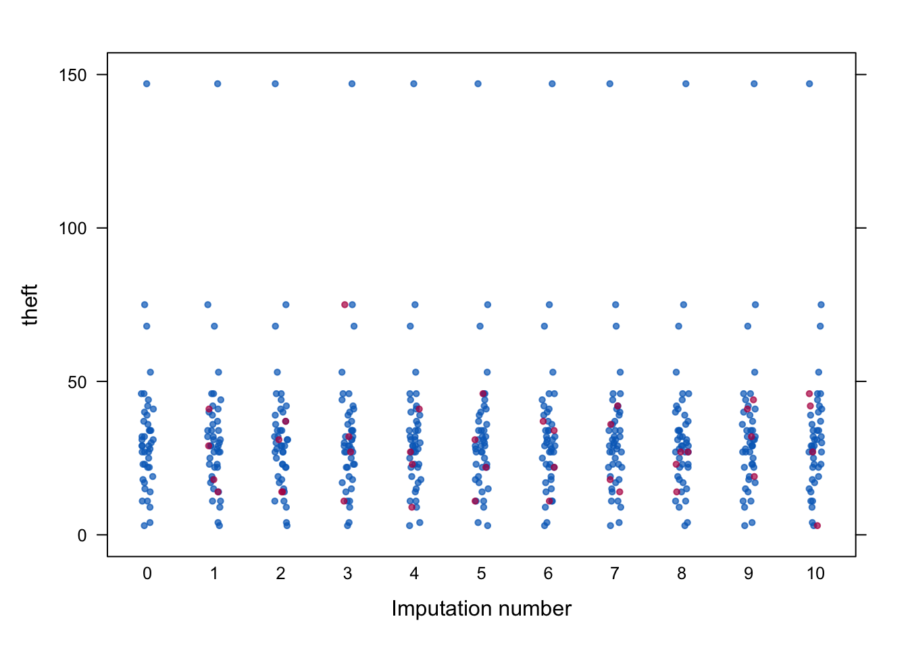
stripplot(imp_4, age, pch = 20, xlab = "Imputation number")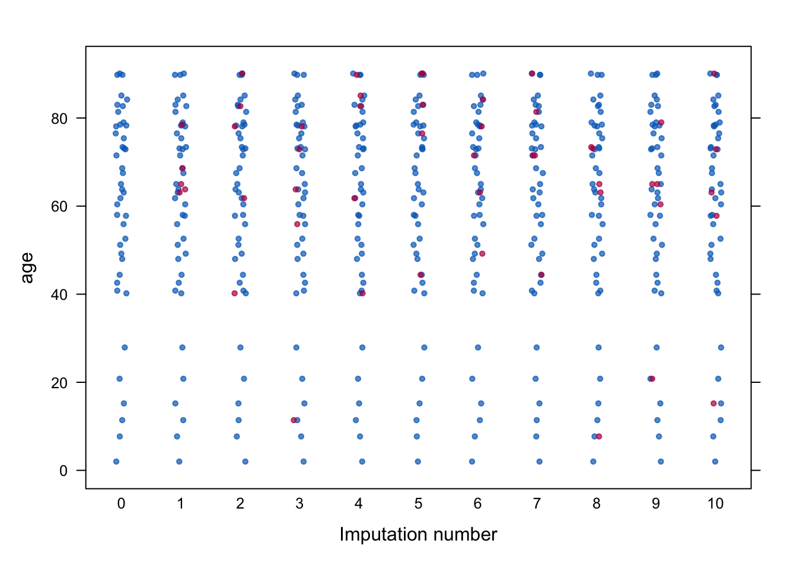
stripplot(imp_4, income, pch = 20, xlab = "Imputation number")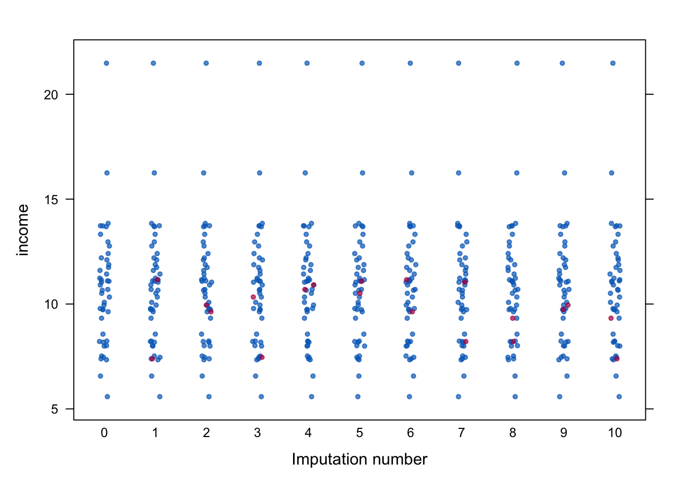
# Distribución de los datos completos y los completados
xyplot(imp_4,involact ~ race+fire+theft+age+income)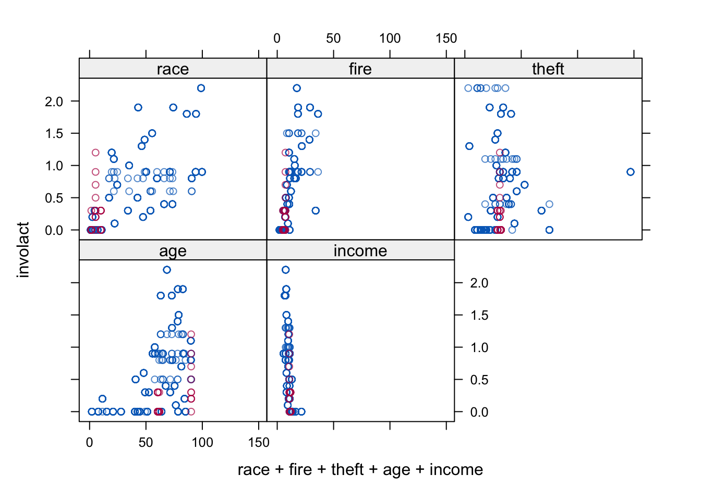
densityplot(imp_4)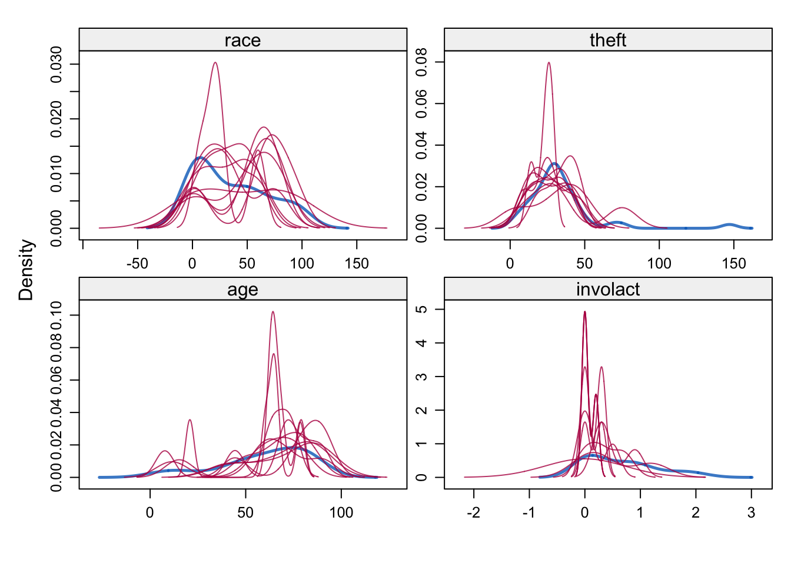
# Ajuste de los modelos con los datos completados (m modelos)
fit <- with(imp_4, lm(involact ~ race+fire+theft+age+log(income)))
# Pool y resumen de resultados
fit # Resultado de la regresión para cada conjunto de datos imputados (m=10 en el ejemplo)call :
with.mids(data = imp_4, expr = lm(involact ~ race + fire + theft +
age + log(income)))
call1 :
mice(data = chmiss, m = 10, printFlag = F)
nmis :
race fire theft age involact income
4 2 4 5 3 2
analyses :
[[1]]
Call:
lm(formula = involact ~ race + fire + theft + age + log(income))
Coefficients:
(Intercept) race fire theft age log(income)
-0.599910 0.009319 0.036267 -0.009063 0.007314 0.127509
[[2]]
Call:
lm(formula = involact ~ race + fire + theft + age + log(income))
Coefficients:
(Intercept) race fire theft age log(income)
0.121086 0.005899 0.033715 -0.005583 0.007738 -0.167841
[[3]]
Call:
lm(formula = involact ~ race + fire + theft + age + log(income))
Coefficients:
(Intercept) race fire theft age log(income)
0.230438 0.006959 0.033557 -0.005745 0.005959 -0.177621
[[4]]
Call:
lm(formula = involact ~ race + fire + theft + age + log(income))
Coefficients:
(Intercept) race fire theft age log(income)
-0.437711 0.007982 0.035852 -0.005749 0.007089 0.037169
[[5]]
Call:
lm(formula = involact ~ race + fire + theft + age + log(income))
Coefficients:
(Intercept) race fire theft age log(income)
-0.243150 0.007204 0.036488 -0.008048 0.007791 -0.019826
[[6]]
Call:
lm(formula = involact ~ race + fire + theft + age + log(income))
Coefficients:
(Intercept) race fire theft age log(income)
0.095326 0.007493 0.035017 -0.005226 0.005428 -0.139136
[[7]]
Call:
lm(formula = involact ~ race + fire + theft + age + log(income))
Coefficients:
(Intercept) race fire theft age log(income)
0.168600 0.007552 0.031955 -0.006110 0.006584 -0.173716
[[8]]
Call:
lm(formula = involact ~ race + fire + theft + age + log(income))
Coefficients:
(Intercept) race fire theft age log(income)
0.373117 0.006646 0.030627 -0.005362 0.006434 -0.237995
[[9]]
Call:
lm(formula = involact ~ race + fire + theft + age + log(income))
Coefficients:
(Intercept) race fire theft age log(income)
-0.092063 0.006544 0.032811 -0.007120 0.007919 -0.065382
[[10]]
Call:
lm(formula = involact ~ race + fire + theft + age + log(income))
Coefficients:
(Intercept) race fire theft age log(income)
0.131407 0.006564 0.037846 -0.007256 0.005088 -0.123178 # Para ver el resultado de una regresión concreta (la primera por ejemplo)
summary(fit$analyses[[1]])
Call:
lm(formula = involact ~ race + fire + theft + age + log(income))
Residuals:
Min 1Q Median 3Q Max
-0.87720 -0.15182 -0.05708 0.20480 0.76808
Coefficients:
Estimate Std. Error t value Pr(>|t|)
(Intercept) -0.599910 1.088705 -0.551 0.584603
race 0.009319 0.002555 3.648 0.000739 ***
fire 0.036267 0.009371 3.870 0.000382 ***
theft -0.009063 0.002895 -3.131 0.003209 **
age 0.007314 0.002783 2.628 0.012024 *
log(income) 0.127509 0.396047 0.322 0.749122
---
Signif. codes: 0 '***' 0.001 '**' 0.01 '*' 0.05 '.' 0.1 ' ' 1
Residual standard error: 0.3506 on 41 degrees of freedom
Multiple R-squared: 0.728, Adjusted R-squared: 0.6949
F-statistic: 21.95 on 5 and 41 DF, p-value: 1.244e-10# Pool de resultados de regresión
summary(pool(fit)) term estimate std.error statistic df p.value
1 (Intercept) -0.025286073 1.092690052 -0.02314112 34.53745 0.9816708904
2 race 0.007216278 0.002705433 2.66732786 31.55176 0.0119609194
3 fire 0.034413473 0.009405569 3.65883993 36.04671 0.0008041661
4 theft -0.006526315 0.002962423 -2.20303287 26.95465 0.0363243930
5 age 0.006734236 0.002916411 2.30908328 31.93569 0.0275622318
6 log(income) -0.094001521 0.397330269 -0.23658283 34.56589 0.8143768712# Comparación de los resultados a posteriori, con la muestra completa
data(chredlin, package="faraway")
mod_full <- lm(involact ~ race+fire+theft+age+log(income), chredlin)
summary(mod_full)
Call:
lm(formula = involact ~ race + fire + theft + age + log(income),
data = chredlin)
Residuals:
Min 1Q Median 3Q Max
-0.85393 -0.16922 -0.03088 0.17890 0.81228
Coefficients:
Estimate Std. Error t value Pr(>|t|)
(Intercept) -1.185540 1.100255 -1.078 0.287550
race 0.009502 0.002490 3.817 0.000449 ***
fire 0.039856 0.008766 4.547 4.76e-05 ***
theft -0.010295 0.002818 -3.653 0.000728 ***
age 0.008336 0.002744 3.038 0.004134 **
log(income) 0.345762 0.400123 0.864 0.392540
---
Signif. codes: 0 '***' 0.001 '**' 0.01 '*' 0.05 '.' 0.1 ' ' 1
Residual standard error: 0.3345 on 41 degrees of freedom
Multiple R-squared: 0.7517, Adjusted R-squared: 0.7214
F-statistic: 24.83 on 5 and 41 DF, p-value: 2.009e-11Código Python
# Lectura de librerías
import numpy as np
import pandas as pd
import matplotlib.pyplot as plt
import seaborn as sns
import statsmodels.api as sm
import statsmodels.formula.api as smf
# Lectura de datos
chmiss = pd.read_csv("data/SEGUROS_CHICAGO.csv", index_col=0)
chmiss.describe().round(2) race fire theft age involact income
count 43.00 45.00 43.00 42.00 44.00 45.00
mean 35.61 11.42 32.65 59.97 0.65 10.74
std 33.26 8.36 23.12 23.62 0.64 2.79
min 1.00 2.00 3.00 2.00 0.00 5.58
25% 3.75 5.60 22.00 48.30 0.00 8.56
50% 24.50 9.50 29.00 64.40 0.50 10.69
75% 57.65 15.10 38.00 78.25 0.92 12.10
max 99.70 36.20 147.00 90.10 2.20 21.48# Detección de datos perdidos
# Por filas (casos)
chmiss.isna().sum(axis=1)zip
60626 1
60640 0
60613 1
60657 1
60614 0
60610 0
60611 0
60625 0
60618 1
60647 1
60622 0
60631 0
60646 1
60656 0
60630 0
60634 1
60641 0
60635 0
60639 0
60651 1
60644 1
60624 0
60612 0
60607 1
60623 0
60608 1
60616 1
60632 0
60609 1
60653 0
60615 0
60638 0
60629 1
60636 0
60621 1
60637 0
60652 0
60620 1
60619 0
60649 1
60617 1
60655 0
60643 0
60628 1
60627 0
60633 0
60645 1
dtype: int64plt.imshow(~chmiss.isna(), aspect='auto')
plt.xlabel("variables")
plt.ylabel("cases")
plt.gray()
plt.show()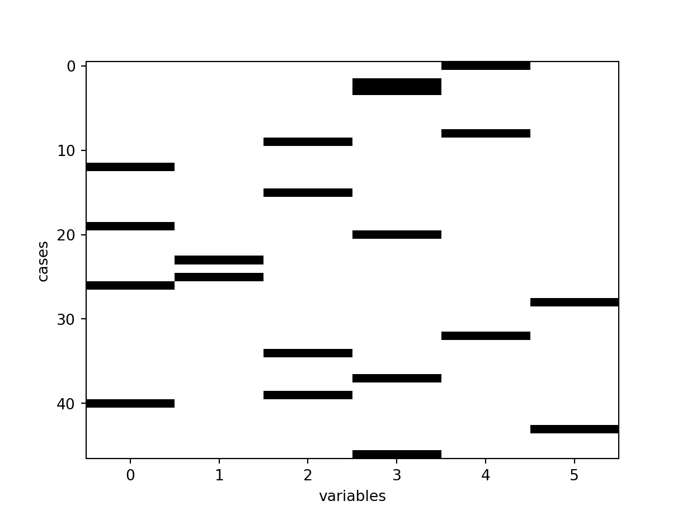
# Por columnas (variables)
chmiss.isna().sum(axis=0)race 4
fire 2
theft 4
age 5
involact 3
income 2
dtype: int64# Tratamiento de datos perdidos
# Omisión de los datos perdidos: resultados con datos completos
mod_1 = smf.ols(formula='involact ~ race + fire + theft + age + np.log(income)', data=chmiss).fit()
print(mod_1.summary()) OLS Regression Results
==============================================================================
Dep. Variable: involact R-squared: 0.790
Model: OLS Adj. R-squared: 0.740
Method: Least Squares F-statistic: 15.79
Date: Wed, 15 Nov 2023 Prob (F-statistic): 1.69e-06
Time: 09:50:31 Log-Likelihood: -5.7253
No. Observations: 27 AIC: 23.45
Df Residuals: 21 BIC: 31.23
Df Model: 5
Covariance Type: nonrobust
==================================================================================
coef std err t P>|t| [0.025 0.975]
----------------------------------------------------------------------------------
Intercept -2.4072 1.419 -1.696 0.105 -5.359 0.544
race 0.0111 0.003 3.232 0.004 0.004 0.018
fire 0.0450 0.011 4.208 0.000 0.023 0.067
theft -0.0161 0.006 -2.894 0.009 -0.028 -0.005
age 0.0091 0.003 2.652 0.015 0.002 0.016
np.log(income) 0.8443 0.532 1.588 0.127 -0.261 1.950
==============================================================================
Omnibus: 1.216 Durbin-Watson: 2.453
Prob(Omnibus): 0.545 Jarque-Bera (JB): 0.935
Skew: 0.441 Prob(JB): 0.626
Kurtosis: 2.768 Cond. No. 1.89e+03
==============================================================================
Notes:
[1] Standard Errors assume that the covariance matrix of the errors is correctly specified.
[2] The condition number is large, 1.89e+03. This might indicate that there are
strong multicollinearity or other numerical problems.# Imputación simple: uso de la media para predecir los datos faltantes de los regresores
cmeans = chmiss.mean(axis=0)
cmeansrace 35.609302
fire 11.424444
theft 32.651163
age 59.969048
involact 0.647727
income 10.735867
dtype: float64imput_1 = chmiss.copy()
imput_1.race.fillna(cmeans['race'],inplace=True)
imput_1.fire.fillna(cmeans['fire'],inplace=True)
imput_1.theft.fillna(cmeans['theft'],inplace=True)
imput_1.age.fillna(cmeans['age'],inplace=True)
imput_1.income.fillna(cmeans['income'],inplace=True)
mod_2 = smf.ols(formula='involact ~ race + fire + theft + age + np.log(income)', data=imput_1).fit()
print(mod_2.summary()) OLS Regression Results
==============================================================================
Dep. Variable: involact R-squared: 0.681
Model: OLS Adj. R-squared: 0.639
Method: Least Squares F-statistic: 16.25
Date: Wed, 15 Nov 2023 Prob (F-statistic): 1.46e-08
Time: 09:50:31 Log-Likelihood: -17.153
No. Observations: 44 AIC: 46.31
Df Residuals: 38 BIC: 57.01
Df Model: 5
Covariance Type: nonrobust
==================================================================================
coef std err t P>|t| [0.025 0.975]
----------------------------------------------------------------------------------
Intercept 0.5296 1.088 0.487 0.629 -1.673 2.732
race 0.0070 0.003 2.452 0.019 0.001 0.013
fire 0.0282 0.010 2.956 0.005 0.009 0.048
theft -0.0033 0.003 -1.206 0.235 -0.009 0.002
age 0.0062 0.003 1.976 0.055 -0.000 0.013
np.log(income) -0.3158 0.390 -0.809 0.423 -1.106 0.474
==============================================================================
Omnibus: 1.687 Durbin-Watson: 2.026
Prob(Omnibus): 0.430 Jarque-Bera (JB): 0.817
Skew: -0.219 Prob(JB): 0.665
Kurtosis: 3.504 Cond. No. 1.68e+03
==============================================================================
Notes:
[1] Standard Errors assume that the covariance matrix of the errors is correctly specified.
[2] The condition number is large, 1.68e+03. This might indicate that there are
strong multicollinearity or other numerical problems.# Imputación múltiple: enfoque MICE
# (https://www.statsmodels.org/stable/imputation.html)
# NOTA: la librería statsmodels incluye el método MICE, pero no es
# exactamente el mismo que el usado en R
import statsmodels.imputation.mice as smimice
imp = smimice.MICEData(chmiss)
formula = 'involact ~ race + fire + theft + age + np.log(income)'
mod_3 = smimice.MICE(formula, sm.OLS, imp)
results = mod_3.fit(10, 10)
print(results.summary()) Results: MICE
====================================================================
Method: MICE Sample size: 47
Model: OLS Scale 0.14
Dependent variable: involact Num. imputations 10
--------------------------------------------------------------------
Coef. Std.Err. t P>|t| [0.025 0.975] FMI
--------------------------------------------------------------------
Intercept 0.1845 1.1791 0.1565 0.8756 -2.1264 2.4954 0.1010
race 0.0072 0.0028 2.5197 0.0117 0.0016 0.0127 0.0684
fire 0.0310 0.0095 3.2505 0.0012 0.0123 0.0497 0.0660
theft -0.0036 0.0038 -0.9531 0.3405 -0.0111 0.0038 0.5374
age 0.0060 0.0033 1.8094 0.0704 -0.0005 0.0124 0.2466
np.log(income) -0.1791 0.4260 -0.4205 0.6741 -1.0141 0.6558 0.0996
====================================================================